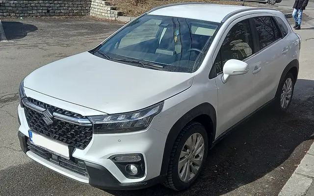

Par Motor › Precios por modelo › Suzuki S-Cross
Precio de segunda mano · noviembre de 2026¿Cuánto vale un Suzuki S-Cross de segunda mano?

Precio justo estimado de un Suzuki S-Cross usado en España, año por año, con los kilómetros normales para su edad y en buen estado: de 9.000 € a 31.000 €. Para tasar el tuyo con sus kilómetros reales y su estado, usa el tasador gratis.
Precios del Suzuki S-Cross por año
SX4 S-Cross (2013–2021)
Precio de nuevo: 1.6 120 CV, 19.000 € · 1.6 DDiS 120 CV, 21.500 € · 1.0 Boosterjet 111 CV, 20.000 €
| Año | Km normales | 1.6 120 CV · Gasolina | 1.6 DDiS 120 CV · Diésel | 1.0 Boosterjet 111 CV · Gasolina |
|---|---|---|---|---|
| 2021 | 80.000 km | 12.600 € | 13.000 € | 13.300 € |
| 2020 | 95.000 km | 11.100 € | 13.000 € | 11.600 € |
| 2019 | 100.000 km | 10.500 € | 12.900 € | 11.000 € |
| 2018 | 100.000 km | 10.300 € | 12.800 € | 10.900 € |
| 2017 | 100.000 km | 10.100 € | 12.700 € | 10.600 € |
| 2016 | 100.000 km | 9.900 € | 11.900 € | 10.400 € |
| 2015 | 100.000 km | 9.700 € | 11.200 € | 10.200 € |
| 2014 | 100.000 km | 9.400 € | 10.500 € | 9.900 € |
| 2013 | 100.000 km | 9.000 € | 9.800 € | 9.400 € |
S-Cross (2022) (2022–hoy)
Precio de nuevo: 1.4 Mild Hybrid 129 CV, 26.000 € · 1.5 Hybrid 115 CV, 28.500 €
| Año | Km normales | 1.4 Mild Hybrid 129 CV · Híbrido | 1.5 Hybrid 115 CV · Híbrido |
|---|---|---|---|
| 2026 | 5.000 km | 28.300 € | 31.000 € |
| 2025 | 20.000 km | 24.400 € | 26.800 € |
| 2024 | 35.000 km | 22.900 € | 25.100 € |
| 2023 | 50.000 km | 21.500 € | 23.500 € |
| 2022 | 65.000 km | 20.100 € | 22.000 € |
Kilómetros normales: 15.000 al año en gasolina, híbridos y eléctricos, y 20.000 en diésel, con un máximo de 100.000 km (por encima no tasamos: el precio depende demasiado del historial de cada coche). Cifras redondeadas a 100 €.
Preguntas frecuentes
¿Cuánto vale un Suzuki S-Cross de segunda mano?
Según el año, la versión y los kilómetros, un Suzuki S-Cross usado vale hoy de 9.000 € a 31.000 € en España. El más barato de nuestra tabla es un 1.6 de 2013 (9.000 €) y el más caro un 1.5 Hybrid de 2026 (31.000 €). Son precios justos estimados entre particulares y profesionales, con los kilómetros normales para su edad y en buen estado.
¿Cuánto valor pierde un Suzuki S-Cross al año?
Con unos años encima, un Suzuki S-Cross pierde alrededor de un 6 % de su valor cada año (calculado sobre el 1.4 Mild Hybrid de la generación S-Cross (2022)). Los primeros años la caída es mayor y a partir de los 70.000 km se acelera.
¿Qué motorizaciones tiene el Suzuki S-Cross?
En nuestra base de datos hay versiones gasolina, diésel y híbrido, en 2 generaciónes: SX4 S-Cross y S-Cross (2022).
¿Cómo sé si me piden demasiado por un Suzuki S-Cross?
Abre el tasador de Par Motor, elige el Suzuki S-Cross, el año y los kilómetros reales, y escribe lo que te piden. Te diremos si está por debajo del precio justo (chollo) o por encima (caro). Es gratis y no pide registro ni matrícula.
Otros Suzuki
Compara su coste real
El precio de compra es solo una parte. Mira cuánto te costaría al mes con combustible, seguro, neumáticos, mantenimiento y lo que pierde de valor.
Abrir el comparador →